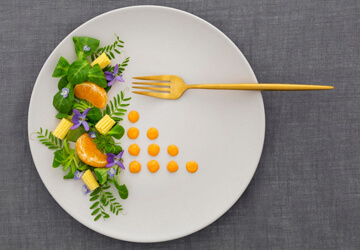
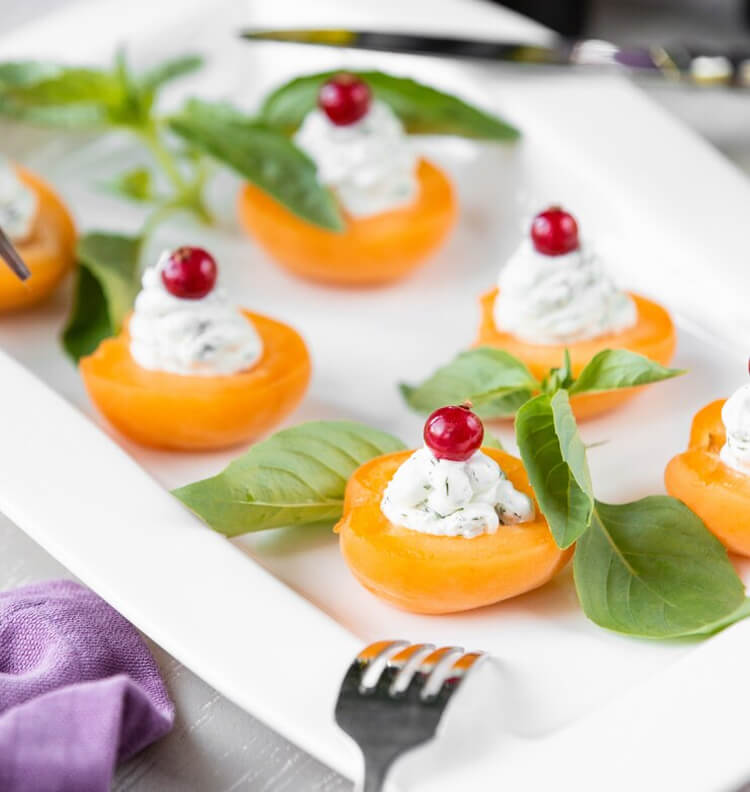
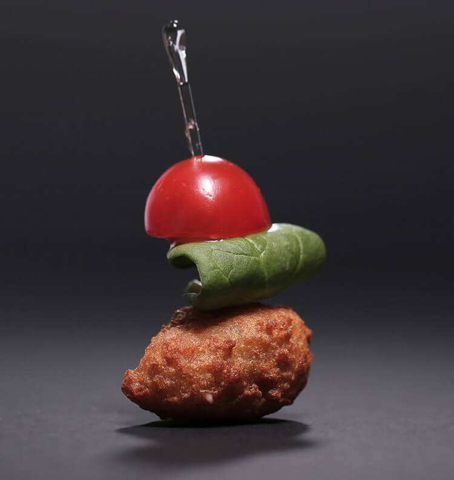
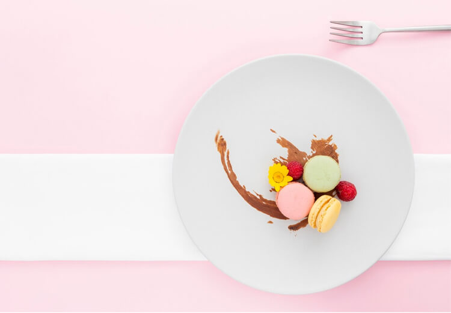
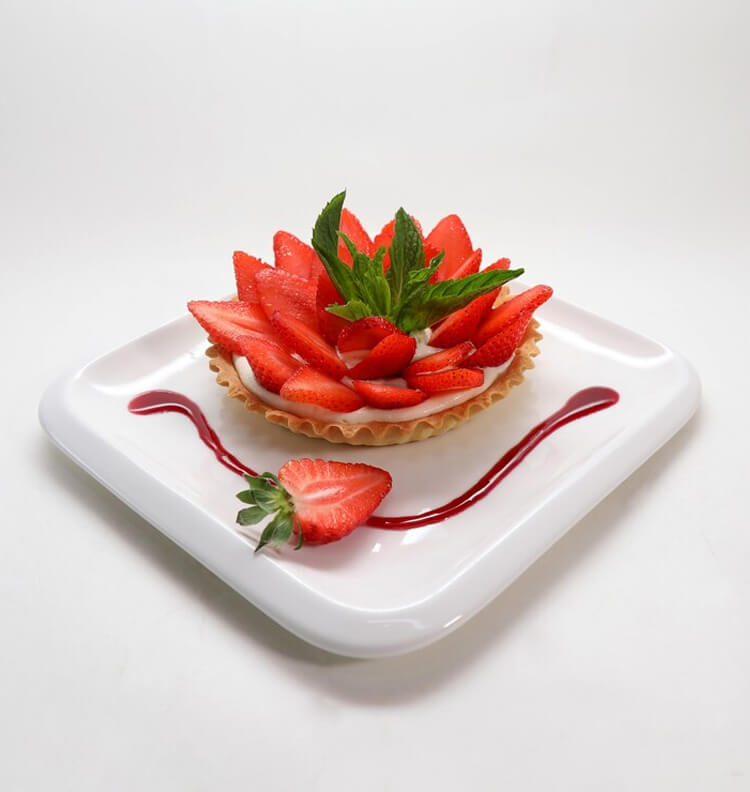

- TOUT
- Puissant
- Incroyable
- Savoureux
- Authentique
- Unique






O'Boresto est un restaurant moléculaire innovant situé dans le cœur de la ville. Ce restaurant offre une expérience gastronomique unique en son genre, combinant la science et l'art de la cuisine pour créer des plats extraordinaires.
Voir le menuEntrez dans un monde où la gastronomie se marie à la science, où les saveurs sont métamorphosées en expériences sensorielles uniques. Chez Oboresto, chaque plat est une aventure, chaque bouchée une révélation. Notre chef talentueux redéfinit la cuisine avec des techniques moléculaires innovantes, vous invitant à explorer de nouveaux horizons gustatifs. Laissez-vous emporter par cette odyssée culinaire où l'art de la cuisine rencontre la magie de la science. Bienvenue chez Oboresto, où chaque repas est une expérience incroyable.
“J'ai eu le privilège de découvrir la cuisine moléculaire dans ce restaurant, et je dois dire que c'était une expérience gastronomique vraiment incroyable. Chaque plat était une œuvre d'art comestible, alliant la science et la créativité pour créer des saveurs et des textures que je n'avais jamais imaginées auparavant.”
“J'ai eu le privilège de découvrir la cuisine moléculaire dans ce restaurant, et je dois dire que c'était une expérience gastronomique vraiment incroyable. Chaque plat était une œuvre d'art comestible, alliant la science et la créativité pour créer des saveurs et des textures que je n'avais jamais imaginées auparavant.”
“J'ai eu le privilège de découvrir la cuisine moléculaire dans ce restaurant, et je dois dire que c'était une expérience gastronomique vraiment incroyable. Chaque plat était une œuvre d'art comestible, alliant la science et la créativité pour créer des saveurs et des textures que je n'avais jamais imaginées auparavant.”
“J'ai eu le privilège de découvrir la cuisine moléculaire dans ce restaurant, et je dois dire que c'était une expérience gastronomique vraiment incroyable. Chaque plat était une œuvre d'art comestible, alliant la science et la créativité pour créer des saveurs et des textures que je n'avais jamais imaginées auparavant.”